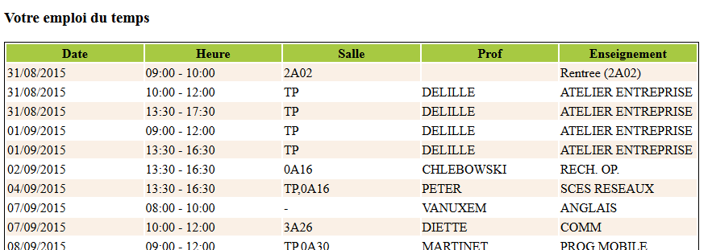

Nous allons lors cette séance nous familiariser avec la bibliothèque jQuery qui fournit de nombreux raccourci facilitant la gestion de tâches courantes côté clients: la manipulation de l'arbre DOM (ie. de la structure et du contenu du document HTML en mémoire), la gestion des événements, la gestion des requêtes asynchrones vers le serveur (AJAX) et aussi des effets graphiques types animation ou drag'n'drop. Pour cette première séance, nous nous concentrerons sur le premiers aspect: la manipulation du DOM. Une première partie du TP portera sur la mise en oeuvre de ces notions sur de petits exemples, tandis que la seconde partie du TP permettra de poursuivre le travail initié sur le jeu d'échecs.
Afin de pouvoir utiliser jQuery, il est nécessaire d'importer la bibliothèque dans le header de votre fichier HTML:
<html>
<head>
<meta charset="UTF-8"/>
<title<Premier pas avec jQuery</title>
<script src='jquery-2.1.3.js'></script>
<script>
$(document).ready(function() {
$('h1').css('font-size', '8pt');
});
</script>
</head>
<body>
<h1>Ceci aurait du être un gros titre !</h1>
</body>
</html>
Copiez/collez cet exemple et sauvez le dans un fichier nommé jquery.html, puis ouvrez-le dans votre navigateur pour observer ce qu'il produit. A priori, vous constaterez que jquery a bien été chargé et que votre titre de niveau 1 est ... un peu petit !
La bibliothèque jQuery repose sur l'observation des principales manipulations généralement effectuées en JavaScript côté client: la modification du contenu d'une page, la modification de style de certains éléments d'une page, la gestion des évènements associés à différents éléments d'une page, la gestion des échanges avec le serveur, et la réalisation d'effets graphiques. Dans l'ensemble de ces opérations, les étapes les plus courantes sont:
La fonction permettant d'accéder facilement à un ou plusieurs éléments du DOM est la fonction $(...) qui prend en paramètre un nom de balise, ou un id, ou une class ou encore une expression plus complexe reposant sur les sélecteurs CSS. Vous trouverez ci-dessous un paragraphe avec un id='exo1'. Vous allez vous exercer sur cet élément pour vous faire la main avec la fonction $.
Afin de pouvoir se repérer dans un DOM, il est nécessaire de connaître quelques sélecteurs CSS:
Voici un premier paragraphe contenant un peu de texte suivi d'une liste:
paragraphe du sous-item I
paragraphe sous-item II
Et encore un peu de texte ensuite, dans un autre paragraphe juste pour le plaisir.
A l'aide de la zone de saisie ci-dessous, réalisez les opérations suivantes:
Maintenant que nous disposons d'un certain nombre d'outils afin de sélectionner ce qui nous intéresse dans l'arbre DOM, nous pouvons passer à la deuxième étape souvent nécessaire: modifier l'arbre DOM. Ces modifications peuvent prendre trois formes: l'ajout d'éléments, le retrait temporaire et la suppression d'éléments. Pour chacune de ces opérations, jQuery fournit un certain nombre de primitives que nous allons étudier avec l'exemple ci-dessous (id de l'exercice: exo2). Les modifications pouvant être effectuées portent à la fois sur l'ajout/retrait de balises, qui modifient la structure de l'arbre, ou encore d'attributs, qui ne changent que des propriétés des noeuds de l'arbre.
Les principales méthodes permettant d'intevenir sur l'arbre sont les suivantes:
Voici un premier paragraphe contenant un peu de texte suivi d'une liste:
Votre age:
Et encore un peu de texte ensuite, dans un autre paragraphe juste pour le plaisir.
Afin de nous exercer un peu avec les primitives de manipulation de l'arbre, commençons par explorer les getter:
Passons maintenant à des modifications un peu plus lourdes en modifiant la structure de l'arbre DOM. Pour cela plusieurs approches sont possibles selon la pérennité des modifications souhaitées, particulièrement pour le retrait de noeuds. En effet, selon le cas, on utilisera une première approche si l'on souhaite retirer définitivement un noeud de l'arbre, ou une autre si c'est un retrait temporaire (parfois utile dans les applications type single page application).
Examinons d'abord les possibilités offertes en terme de déplacement de noeuds dans l'arbre DOM. Il est possible de procéder de deux manières différentes: en sélectionnant l'élément à déplacer et en indiquant le noeud de destination, ou à l'inverse en localisant l'élément devant être modifié et en passant passant en paramètre le noeud à déplacer. Les principales méthodes pour effectuer ce type d'opération sont .insertAfter(), .insertBefore(), .appendTo(), .prependTo().
Illustrons cela en déplacement les premiers et derniers éléments de la liste de #exo2. Dans la console JavaScript, tapez dans un premier temps la commande suivante:
Les auteurs de jQuery appréciant l'usage de la surcharge de méthode, il est possible de créer de nouveaux noeuds très facilement et très directement à l'aide de la fonction $(...). Ainsi, si vous tapez la commande $('<p>Hello World !</p>'); dans la console, vous constaterez que vous récupérez une liste contenant votre nouveau noeud. Une autre notation est possible, en passant par un objet JS:
$( "<a/>", {
html : "Texte <strong>visible par l'utilisateur</strong> de ce lien",
'class': "cool",
href : "www.univ-lille1.fr"
});
Une fois le nouveau noeud créé, il est ensuite possible de l'injecter à l'aide des différentes méthodes présentées dans la section précédente. Voici un exemple:
// Création d'un nouvel élément
var nouvelElement = $("<p>Chouette</p>");
// ajoute le nouvel élémént à l'élément d'ID 'content'
nouvelElement.appendTo("#content");
// Déplace l'élément de 'content' à la fin de la liste
nouvelElement.insertAfter("ul:last");
// Duplique le nouvel élément et l'ajoute en fin de liste
$( "ul" ).last().after(nouvelElement.clone());
Afin de s'entraîner un peu, vous allez modifier la partie suivante de l'arbre, en peuplant la table d'ID table1 afin de l'initialiser ainsi:
Voici la table qu'il vous faudra générer dynamiquement
0 1 2 3 4 5 6 7
8 9 10 11 12 13 14 15
16 17 18 19 20 21 22 23
24 25 26 27 28 29 30 31
32 33 34 35 36 37 38 39
40 41 42 43 44 45 46 47
48 49 50 51 52 53 54 55
56 57 58 59 60 61 62 63
Voici la table qu'il vous faudra générer dynamiquement
Il n'y a plus qu'à ...
Question subsidiaire: comment écrire cela en utilisant un seul appel à .append ? Quel pourrait-être l'interêt ?
La dernière étape consiste à modifier l'arbre DOM en lui retirant des éléments. Il est possible de procéder de deux manières différentes. La première consiste à retirer définitivement un noeud de l'arbre en utilisant la méthode remove tandis que la seconde est utile lorsque l'on souhaite enlever temporairement un noeud de l'arbre, on utilise alors detach. A la différence de la première approche detach conserve les données et gestionnaire d'évènement associé.
Plutôt qu'un long discours, je vous invite à tester cela directement sur cette intéressante page de démonstration.
Vous disposez en plus de ce fichier html d'un source javascript de nom 'N4P1.js'. ce fichier est automatiquement chargé par la ligne suivante de ce document:
<script src='N4P1.js'></script></p>
Ce fichier contient un code javascript qui sera exécuté au chargement de la page. Dans la version initiale qui vous est fourni, ce code ne fait qu'initialiser une variable javascript de nom plainData avec les données de votre emploi du temps (du moins celles qui étaient disponibles lors de la rédaction de ce sujet). La description de cette variable figure en annexe.
| Date | Heure | Salle | Prof | Enseignement |
|---|
Complétez le fichier N4P1.js pour afficher les créneaux dans la table d'id 'table2'. Le résultat obtenu devrait ressembler à:
Note, il vaut faudra trier le tableau de données par date et heure croissante (par ordre numérique).
La variable plainData est un tableau d'objets. Chaque objet décrit une séance, à la fois comme un tableau et comme un objet ayant les attributs suivant:
[
{
"dateSeance": "2015-08-31",
"0": "2015-08-31",
"heureSeance": "1000",
"1": "1000",
"dureeSeance": "200",
"2": "200",
"Enseignement": "ATELIER ENTREPRISE",
"3": "ATELIER ENTREPRISE",
"Salle": "TP",
"4": "TP",
"Groupe": "N4P1",
"5": "N4P1",
"Prof": "DELILLE",
"6": "DELILLE",
"diffusable": "1",
"7": "1",
"dateModif": "2015-07-08 09:12:33",
"8": "2015-07-08 09:12:33",
"codeSeance": "16183565",
"9": "16183565",
"groupeId": "I-N4P1",
"10": "I-N4P1",
"couleurFond": "4259584",
"11": "4259584",
"couleurPolice": "0",
"12": "0"
}, {
"dateSeance": "2015-08-31",
"0": "2015-08-31",
"heureSeance": "1330",
"1": "1330",
"dureeSeance": "400",
"2": "400",
"Enseignement": "ATELIER ENTREPRISE",
"3": "ATELIER ENTREPRISE",
"Salle": "TP",
"4": "TP",
"Groupe": "N4P1",
"5": "N4P1",
"Prof": "DELILLE",
"6": "DELILLE",
"diffusable": "1",
"7": "1",
"dateModif": "2015-07-08 09:13:00",
"8": "2015-07-08 09:13:00",
"codeSeance": "16183566",
"9": "16183566",
"groupeId": "I-N4P1",
"10": "I-N4P1",
"couleurFond": "4259584",
"11": "4259584",
"couleurPolice": "0",
"12": "0"
}, {
...
]